%load_ext autoreload
%autoreload 2
# hardware
import os
# analysis
import numpy as np
import xarray as xr
import pandas as pd
from scipy.integrate import simps
from scipy.interpolate import RegularGridInterpolator
# vis
import matplotlib.pyplot as plt
plt.style.use('seaborn-v0_8-deep')
# Acoustic tomography
import atom
# config stuff
from hydra import initialize, compose
from hydra.utils import instantiate
with initialize(version_base=None, config_path="../../conf/"):
cfg = compose(config_name="configs",)
Travel time measurement review, validation, and bias estimation#
### Array data
atarray = instantiate(cfg.atarray)
atarray.setupPathIntegrals()
## Constants
constants = instantiate(cfg.constants)
# ModelGrid object
mg = atom.fluctuatingField.ModelGrid(
nModelPointsX=51,
nModelPointsY=51,
modelLimsX=np.array([-50,50]),
modelLimsY=np.array([-50,50])
)
mg.buildModelGrid()
datapath = '/Users/nhamilt2/Documents/ATom/data/Data_collection_20190815/'
datafiles = [datapath+x for x in os.listdir(datapath)]
datafiles.sort()
timestamps = list(set([x.split('/')[-1].split('_')[0] for x in datafiles]))
timestamps.sort()
raw_ttlist = []
corrected_ttlist = []
aux = []
for timestamp in timestamps:
### Microphone data
audiodata = instantiate(cfg.audiodata)
mainDataPath = f"/Users/nhamilt2/Documents/ATom/data/Data_collection_20190815/{timestamp}_AcouTomMainData.txt"
try:
audiodata.loadData(mainDataPath)
except:
print(f'skipping {timestamp}')
continue
### Auxiliary data
auxdata = instantiate(cfg.auxdata)
auxDataPath = f"/Users/nhamilt2/Documents/ATom/data/Data_collection_20190815/{timestamp}_AcouTomAuxData.txt"
auxdata.loadData(auxDataPath)
aux.append(auxdata.ds)
## TravelTimeExtractor
ttextractor = atom.signalProc.TravelTimeExtractor(
cfg.traveltimeextractor,
atarray=atarray.ds,
audiodata=audiodata.ds,
auxdata=auxdata.ds,
correctSignalDelayEstimate=False
)
ttextractor.extractTravelTimes()
raw_ttlist.append(ttextractor.ds)
## TravelTimeExtractor
ttextractor = atom.signalProc.TravelTimeExtractor(
cfg.traveltimeextractor,
atarray=atarray.ds,
audiodata=audiodata.ds,
auxdata=auxdata.ds,
correctSignalDelayEstimate=True
)
ttextractor.extractTravelTimes()
corrected_ttlist.append(ttextractor.ds)
skipping 20190815125658
# Auxiliary data
ads = xr.concat(aux, dim='new')
ads['uDir'] = np.arctan2(ads.v, ads.u)
ads = ads.assign_coords(time=pd.timedelta_range(start=0, periods=len(ads.time), freq='0.05S'))
# Raw (uncorrected) travel time data
rttds = xr.concat(raw_ttlist, dim='new')
rttds['time'] = rttds['frame']*0.5
rttds['time'].values = pd.timedelta_range(start=0, periods=len(rttds.frame), freq='0.5S')
rttds = rttds.swap_dims({'frame':'time'})
# Corrected travel time data
cttds = xr.concat(corrected_ttlist, dim='new')
cttds['time'] = cttds['frame']*0.5
cttds['time'].values = pd.timedelta_range(start=0, periods=len(cttds.frame), freq='0.5S')
cttds = cttds.swap_dims({'frame':'time'})
delta_theta = atarray.ds.pathOrientation - ads.uDir.resample(time='60S').mean()
theta_i = atarray.ds.pathOrientation
Li = atarray.ds.pathLength
# detected - expected signal arrival times
tt_err = ttds.timeDeltas
tt_err_mean = tt_err.mean(dim='time')
# estimated
tt_est = ttds.expectedTravelTimes
# Measured
tt_meas = ttds.filteredMeasuredTravelTimes#(ttds.detectedSignalTimes.unstack() - audiodata.ds.speakerSignalEmissionTime).stack(pathID=['spk','mic']).dropna(dim='pathID', how='all')
# Fill NaN values with the mean along the 'x' dimension
tt_meas = tt_meas.combine_first(tt_meas.mean(dim='new'))
# theoretical travel time estimate
tt_est_n = Li/ads.c * (1 - ads.u * np.cos(theta_i)/ ads.c - ads.v * np.sin(theta_i)/ ads.c)
tt_est_n = tt_est_n.transpose('new', 'pathID', 'time')
tt_est_n = tt_est_n.resample(time='0.5S').mean()
# uncorrected expected travel time contained in the codebase
tt_est_o = xr.DataArray(data = rttds.expectedTravelTimes.values, coords = tt_est_n.coords)
tt_meas = xr.DataArray(data = rttds.filteredMeasuredTravelTimes.transpose('new', 'pathID', 'time').values, coords = tt_est_n.coords)
tt_err_o = xr.DataArray(data = rttds.timeDeltas.transpose('new', 'pathID', 'time').values, coords = tt_est_n.coords)
tt_err_n = tt_meas - tt_est_n.values
tt_est_error = tt_est_o-tt_est_n.values
meanWS = ads.WS.mean(dim='time')
normWS = (meanWS - meanWS.min())/(meanWS.max() - meanWS.min())
c = plt.cm.viridis(normWS)
for ii in range(19):
plt.scatter(delta_theta.isel(new=ii), tt_err_n.mean(dim='time').isel(new=ii), color=c[ii,:])
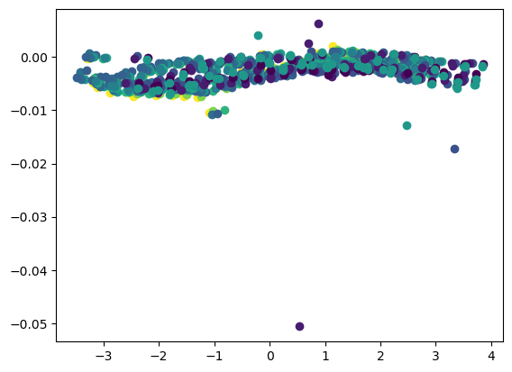
meanWS = ads.WS.mean(dim='time')
normWS = (meanWS - meanWS.min())/(meanWS.max() - meanWS.min())
c = plt.cm.viridis(normWS)
for ii in range(19):
plt.scatter(delta_theta.isel(new=ii), tt_err_n.mean(dim='time').isel(new=ii)/Li.values, color=c[ii,:])
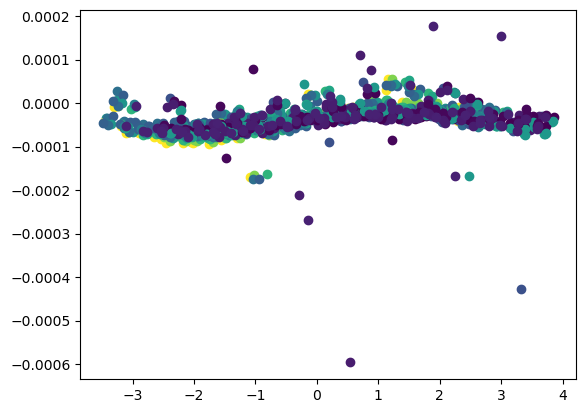
\( \sin (2\theta) = 2 \sin \theta \cos \theta = (\sin \theta +\cos \theta)^2 - 1 = \frac{2 \tan \theta} {1 + \tan^2 \theta}\)
\(\cos (2\theta) = \cos^2 \theta - \sin^2 \theta = 2 \cos^2 \theta - 1 = 1 - 2 \sin^2 \theta = \frac{1 - \tan^2 \theta} {1 + \tan^2 \theta} \)
from scipy.optimize import curve_fit
def cos2x(x, amp, freq, phase, offset):
return amp * np.cos(2 * freq * x + phase) + offset
xdata = delta_theta.values.flatten()
ydata = (tt_est_error.mean(dim='time').T/Li.values[:, None]/meanWS**2).values.flatten()
init = [1.35*10**-8, 1, 0, 10**-8]
params, _ = curve_fit(cos2x, xdata, ydata, init)
x = np.linspace(-np.pi, np.pi, 100)
y = cos2x(x, *params)
params
array([ 1.15320562e-08, 1.00615552e+00, -3.13642119e-03, 1.28828107e-08])
for ii in range(19):
plt.scatter(delta_theta.isel(new=ii), tt_est_error.mean(dim='time').isel(new=ii)/Li.values/meanWS.isel(new=ii)**2, color=c[ii,:])
plt.plot(x,y, c='C2', lw=2)
[<matplotlib.lines.Line2D at 0x7fd061c62a70>]
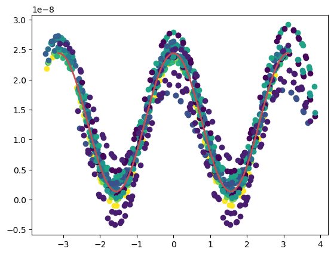
tt_est_error.mean(dim=['time','new']).unstack().plot()
<matplotlib.collections.QuadMesh at 0x7fd061ccb1c0>
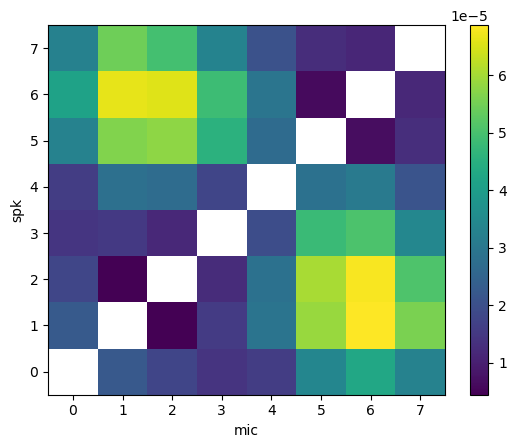
(tt_est_error.mean(dim=['time','new'])/Li.values).unstack().plot()
<matplotlib.collections.QuadMesh at 0x7fd03324f760>
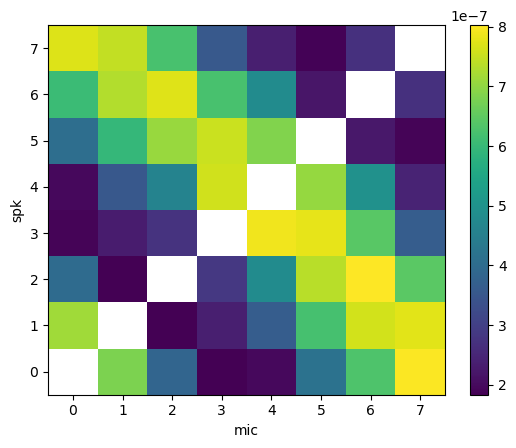
eps = tt_est_n.unstack() - tt_meas.unstack()
eps = eps.stack(pathID=['spk','mic']).dropna(dim='pathID', how='all')
for ii in range(19):
plt.scatter(delta_theta.isel(new=ii), eps.mean(dim='time').isel(new=ii), c=Li)
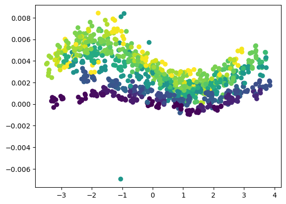
for ii in range(19):
plt.scatter(delta_theta.isel(new=ii), eps.mean(dim='time').isel(new=ii)/Li.values, c=Li)
fig, ax = plt.subplots(1,3, figsize=(15,4))
eps.unstack().mean(dim=['new','time']).plot(ax=ax[0])
(-tt_err_o).mean(dim=['new','time']).unstack().plot(ax=ax[1])
(eps+tt_err_o).mean(dim=['time','new']).unstack().plot(ax=ax[2])
fig.tight_layout()
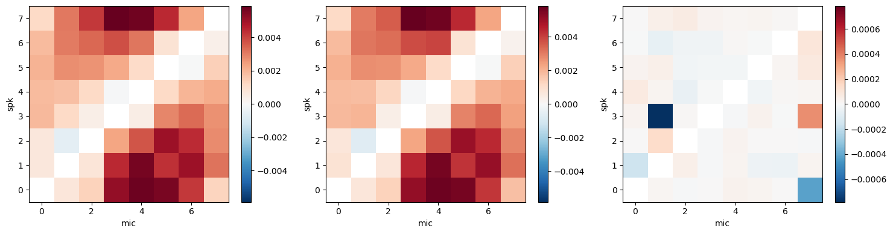
fig, ax = plt.subplots()
ax.set_prop_cycle(color=c)
ax.plot(eps.mean(dim='time').T,)
plt.xlabel('PathID')
plt.ylabel('tt error, new method')
Text(0, 0.5, 'tt error, new method')
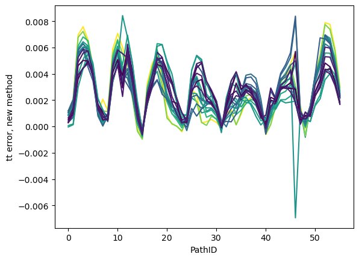
from scipy.optimize import curve_fit
def sinx(x, amp, freq, phase, offset):
return amp * np.sin(freq * x + phase) + offset
xdata = delta_theta.values.flatten()
ydata = (eps.fillna(0).mean(dim='time').T/Li.values[:, None]).values.flatten()
init = [-1e-6, 1, 0, 1e-6]
params, _ = curve_fit(sinx, xdata, ydata, init)
x = np.linspace(-np.pi, np.pi, 100)
y = sinx(x, *params)
plt.scatter(xdata, ydata)
plt.plot(x, y, c='C2', lw=2)
[<matplotlib.lines.Line2D at 0x7fd03196b4c0>]
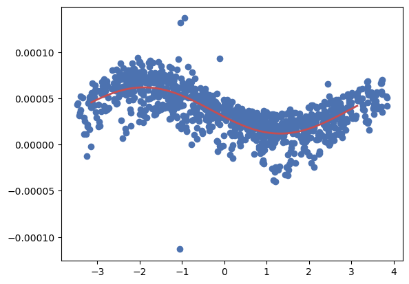
for ii in range(19):
plt.scatter(delta_theta.isel(new=ii), eps.mean(dim='time').isel(new=ii), c=Li)
plt.plot(x, y, c='C2', lw=2)
[<matplotlib.lines.Line2D at 0x7fd03f3d9360>]
for ii in range(19):
plt.scatter(delta_theta.isel(new=ii), eps.mean(dim='time').isel(new=ii)/Li.values, c=Li)
plt.plot(x, y, c='C2', lw=2)
[<matplotlib.lines.Line2D at 0x7fd022cb4940>]
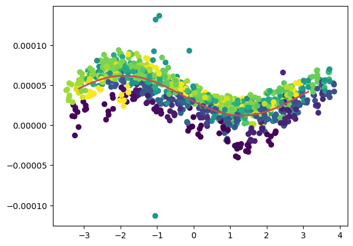
dtheta = atarray.ds.pathOrientation - ads.uDir.resample(time='0.5S').mean()
params
array([-2.49834242e-05, 9.75330106e-01, 6.56362329e+00, 3.69116813e-05])
params[2]-2*np.pi
0.2804379779451205
3.69116813e-05/2.85
1.2951467122807017e-05
ytest = -2.85 * Li * np.sin(0.975*dtheta + params[2])/ads.c**2 + Li*params[3]
plt.scatter(dtheta, ytest/Li)
plt.plot(x, y, c='C2', lw=2)
[<matplotlib.lines.Line2D at 0x7fd063994580>]
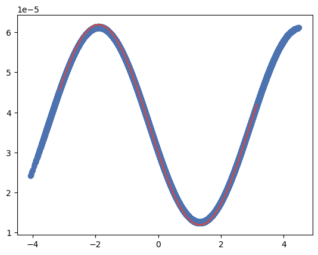
plt.plot(x, y, c='C2', lw=2)
plt.plot(x, ytest, c='C0', lw=2)
---------------------------------------------------------------------------
ValueError Traceback (most recent call last)
Cell In[150], line 2
1 plt.plot(x, y, c='C2', lw=2)
----> 2 plt.plot(x, ytest, c='C0', lw=2)
File ~/opt/anaconda3/envs/atom/lib/python3.10/site-packages/matplotlib/pyplot.py:2740, in plot(scalex, scaley, data, *args, **kwargs)
2738 @_copy_docstring_and_deprecators(Axes.plot)
2739 def plot(*args, scalex=True, scaley=True, data=None, **kwargs):
-> 2740 return gca().plot(
2741 *args, scalex=scalex, scaley=scaley,
2742 **({"data": data} if data is not None else {}), **kwargs)
File ~/opt/anaconda3/envs/atom/lib/python3.10/site-packages/matplotlib/axes/_axes.py:1662, in Axes.plot(self, scalex, scaley, data, *args, **kwargs)
1419 """
1420 Plot y versus x as lines and/or markers.
1421
(...)
1659 (``'green'``) or hex strings (``'#008000'``).
1660 """
1661 kwargs = cbook.normalize_kwargs(kwargs, mlines.Line2D)
-> 1662 lines = [*self._get_lines(*args, data=data, **kwargs)]
1663 for line in lines:
1664 self.add_line(line)
File ~/opt/anaconda3/envs/atom/lib/python3.10/site-packages/matplotlib/axes/_base.py:311, in _process_plot_var_args.__call__(self, data, *args, **kwargs)
309 this += args[0],
310 args = args[1:]
--> 311 yield from self._plot_args(
312 this, kwargs, ambiguous_fmt_datakey=ambiguous_fmt_datakey)
File ~/opt/anaconda3/envs/atom/lib/python3.10/site-packages/matplotlib/axes/_base.py:504, in _process_plot_var_args._plot_args(self, tup, kwargs, return_kwargs, ambiguous_fmt_datakey)
501 self.axes.yaxis.update_units(y)
503 if x.shape[0] != y.shape[0]:
--> 504 raise ValueError(f"x and y must have same first dimension, but "
505 f"have shapes {x.shape} and {y.shape}")
506 if x.ndim > 2 or y.ndim > 2:
507 raise ValueError(f"x and y can be no greater than 2D, but have "
508 f"shapes {x.shape} and {y.shape}")
ValueError: x and y must have same first dimension, but have shapes (100,) and (8, 8, 19, 120)
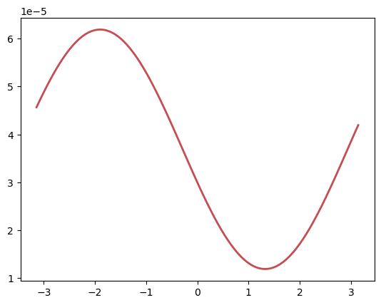
C = eps.unstack()/(Li.unstack() * np.sin(dtheta.unstack()))
C = C.stack(pathID=['spk','mic']).dropna(dim='pathID', how='all')
plt.plot(C.mean(dim=['new','time']) )
[<matplotlib.lines.Line2D at 0x7fd051357f70>]
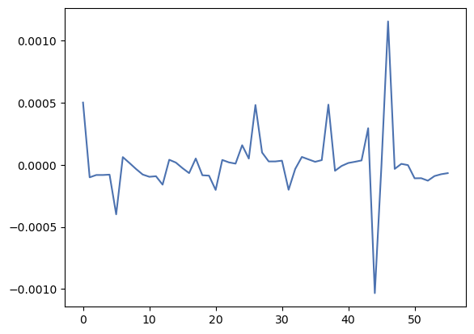
eps.unstack().mean(dim=['new','time']).plot()
<matplotlib.collections.QuadMesh at 0x7fd032f39660>
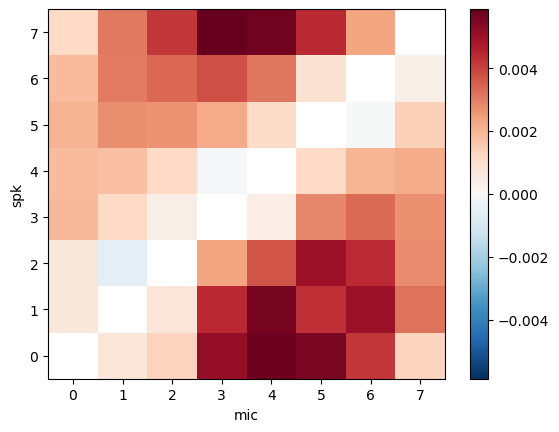
eps.unstack().median(dim=['new','time']).plot()
<matplotlib.collections.QuadMesh at 0x7fd033009de0>
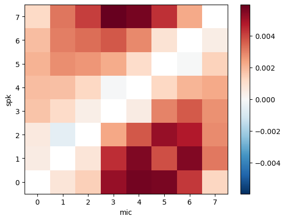
# pid=np.random.randint(56)
tt_est_n.isel(new=1, pathID=pid).plot()
tt_meas.isel(new=1, pathID=pid).plot()
(tt_meas.isel(new=1, pathID=pid)+eps.median(dim=['new','time']).isel(pathID=pid)).plot()
[<matplotlib.lines.Line2D at 0x7fd0330d70a0>]
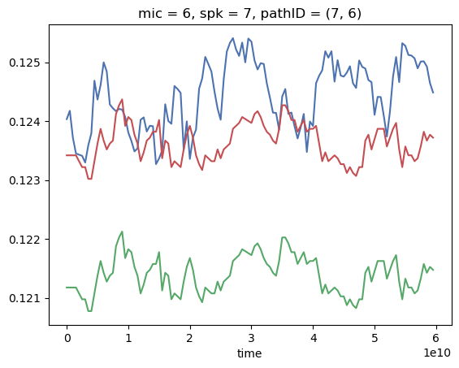
pid=np.random.randint(56)
tt_est_n.isel(new=1, pathID=pid).plot()
tt_meas.isel(new=1, pathID=pid).plot()
(tt_meas.isel(new=1, pathID=pid)+eps.median(dim=['new','time']).isel(pathID=pid)).plot()
[<matplotlib.lines.Line2D at 0x7fd03dc20c40>]
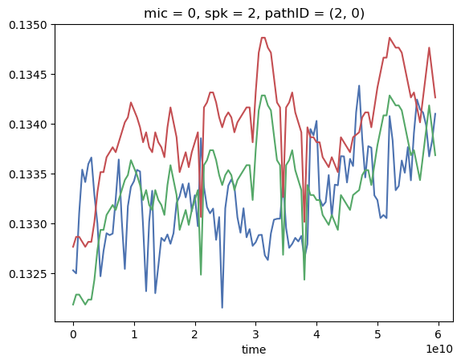
tmp = xr.DataArray(data=tt_meas.transpose('new','pathID','time').values, coords=tt_est_n.coords)
tt_meas_c = tmp+eps.median(dim=['new','time'])
eps.median(dim=['new','time']).unstack().fillna(0).values
array([[ 0.00000000e+00, 7.57590151e-04, 1.40114756e-03,
5.20779164e-03, 5.73354371e-03, 5.65147077e-03,
4.18932544e-03, 1.27259520e-03],
[ 4.81925561e-04, 0.00000000e+00, 7.46218178e-04,
4.41304382e-03, 5.57150249e-03, 3.85902009e-03,
5.51332015e-03, 3.16087086e-03],
[ 5.80056413e-04, -5.70913978e-04, 0.00000000e+00,
2.29060504e-03, 3.69431913e-03, 5.19264766e-03,
4.76400412e-03, 2.79324061e-03],
[ 1.69559956e-03, 1.12093610e-03, 3.85725791e-04,
0.00000000e+00, 4.84465200e-04, 2.95009333e-03,
3.63160981e-03, 2.71129423e-03],
[ 1.85975544e-03, 1.78610404e-03, 1.22458551e-03,
-8.25603489e-05, 0.00000000e+00, 1.21194404e-03,
2.00858796e-03, 2.27842764e-03],
[ 2.04942295e-03, 2.78054629e-03, 2.62919890e-03,
2.21538884e-03, 1.11538812e-03, 0.00000000e+00,
-3.77537610e-05, 1.38661448e-03],
[ 1.84077184e-03, 3.06935043e-03, 3.34154527e-03,
3.71171079e-03, 2.85864836e-03, 8.47766322e-04,
0.00000000e+00, 4.48026950e-04],
[ 1.19142876e-03, 3.16370673e-03, 4.09725959e-03,
5.95345807e-03, 5.71053238e-03, 4.35481203e-03,
2.24454912e-03, 0.00000000e+00]])